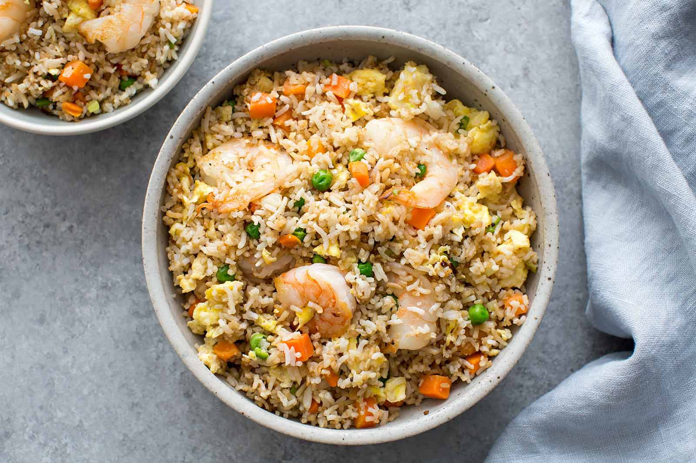

Shrimp Fried Rice

Shrimp fried rice is a quick and easy dish that can make a great lunch or dinner.
Ingredients
- 2 cups white rice
- shrimp
- 1 egg
- soy sauce
- diced onions
- diced carrots
How to make:
- boil 2 cups of rice for 11 minutes
- place shrimp in a pan and cook until pink
- take shrimp out of the pan and crack the egg into the same pan
- scramble the egg
- add the cooked rice and shrimp back into the panb with the egg
- add the onions and the carrots into the pan along with the soy sauce
- stir the rice until until it is a brown color